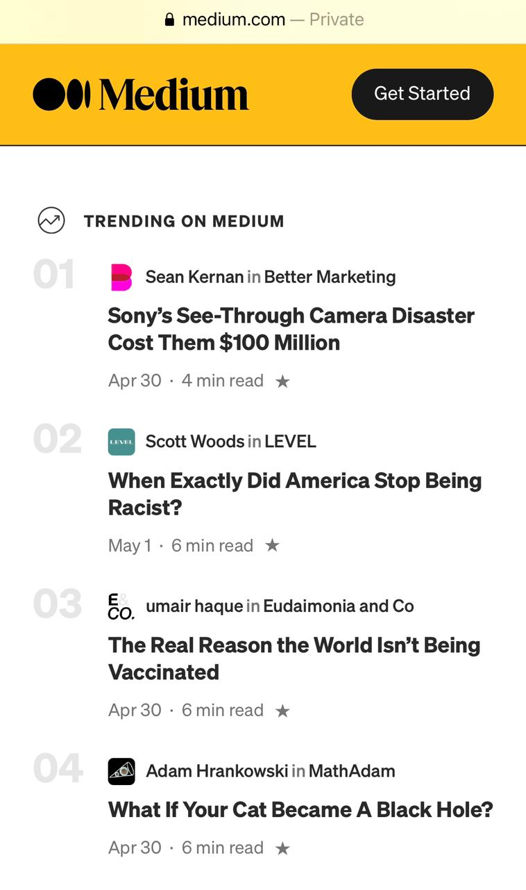
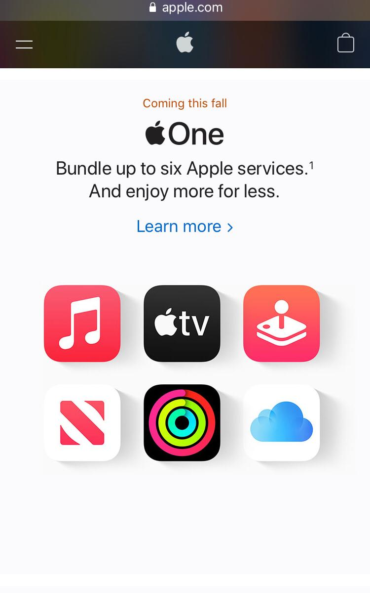
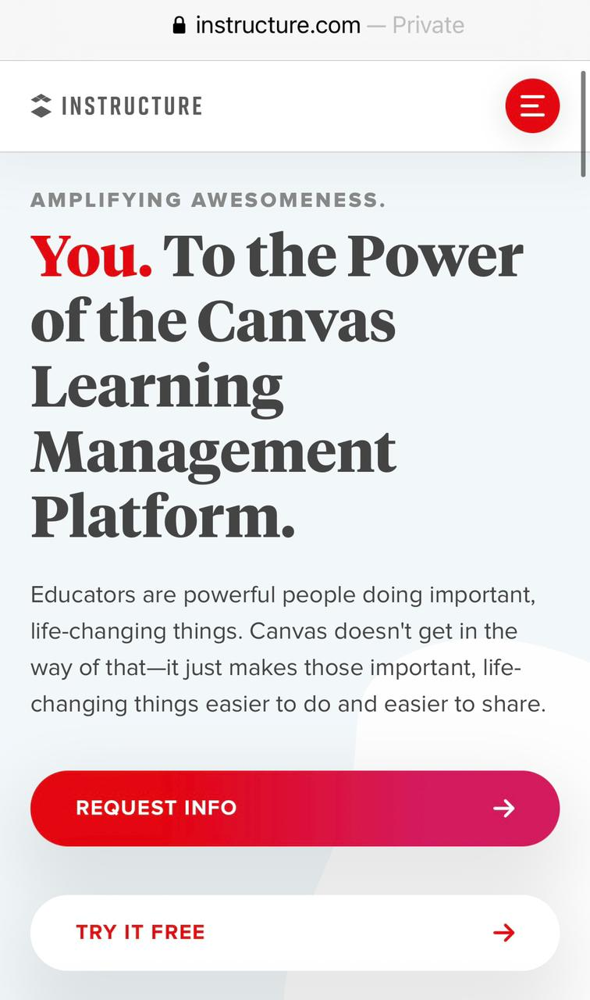

Aligment
w3schools
This principle is one of the most important ones to take care of. It is usually ignored but it does a huge impact. It is prefered a left aligment than a centered one, this is why I chose w3schools as example. They have a great left aligment and space between the subjects that makes it visually appealing and works great with mobile browsers.
White Space
Apple
Apple has been making a great work with white space all over the years and this is why I chose this example. As we know, it is not just white space, it is a breathing space for all elements including fonts.
We can appreciate how even the shadows has a little gap between them and how simplicity looks more sophisticated than any other kind of designs.
Contrast
Britannica
I like how the contrast in this webpage makes it look professional but visually apealling at the same time. We can even see some repetition, aligment and space. I wouldn't bother at all to use it instead of an application, and if I desire to, I can create a shorcut from this webpage to use it and save some space in my phone.